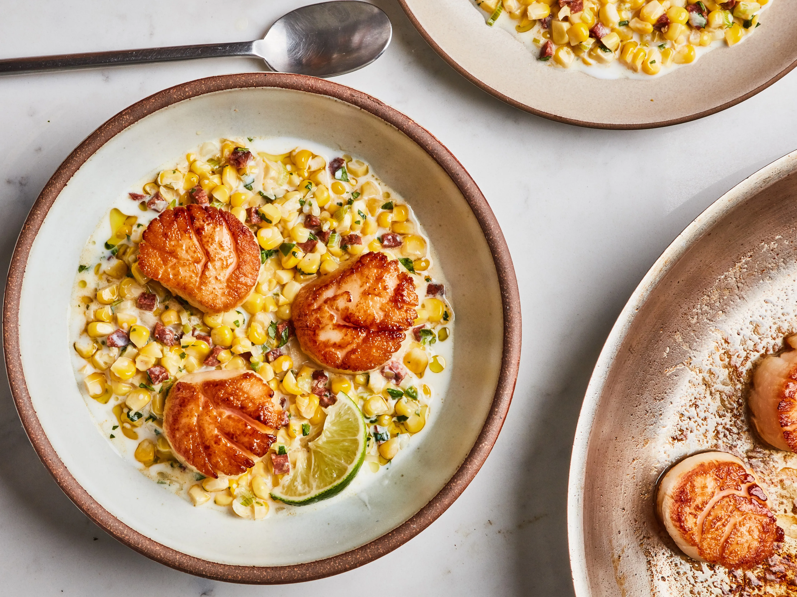

Pan Seared Scallops With Chorizo And Corn

Description
This is a recipe by Molly Baz. We discovered her book at the beginning of the year (2023) and have cooked a handful of the recipes inside. Out of all of them, this one is our absolute favorite
and we would cook it every single night if it wasnt for the smell that lingers in the house for a few days. If our home didnt have terrible air flow and scallops werent so expensive, this meal would be a weekly staple in our house.
Currently we eat it about once a month. The smell is totally worth it and I highly recommend that every single person make these at least once. The secret to this recipe is using a H O T pan and searing the scallops fast and hard.
A cast iron skillet is definitely preferred. I hope you enjoy these as much as we do!
Ingredients
- 3 ears of corn, husked
- 3 Tbsp. extra-virgin olive oil, divided
- 2 oz. smoked Spanish chorizo, finely chopped
- 12 scallions, white and pale green parts only, thinly sliced
- 4 garlic cloves, thinly sliced
- ½ serrano chile (depending on heat), finely chopped
- ¾ tsp. kosher salt, plus more
- 1 cup buttermilk
- ⅓ cup chopped cilantro
- 12 large sea scallops (about 1 lb.), side muscle removed, patted dry
- 2 Tbsp. unsalted butter
- 1 lime, halved
- Lime wedges (for serving)
Steps
- Cut kernels from corncobs and place in a medium bowl. Using the back of a chef’s knife, scrape milk from cobs into the bowl; discard cobs.
- Heat 1 Tbsp. oil in a medium saucepan over medium. Cook chorizo, stirring occasionally, until it starts to get crisp, about 2 minutes. Carefully pour chorizo oil into a small bowl (use a slotted spoon to hold back chorizo); set chorizo oil aside. Return chorizo pan to medium heat and add scallions, garlic, chile, 1 Tbsp. olive oil, and ¾ tsp. salt. Cook, stirring occasionally, until vegetables are softened but not browned, about 2 minutes. Add corn kernels and cook, stirring occasionally, until bright yellow and softened, 5–7 minutes. Remove from heat and let corn mixture cool in pan 5 minutes. Gently mix in buttermilk and cilantro. Taste and season with more salt if needed.
- Heat 1 Tbsp. oil in a medium saucepan over medium. Cook chorizo, stirring occasionally, until it starts to get crisp, about 2 minutes. Carefully pour chorizo oil into a small bowl (use a slotted spoon to hold back chorizo); set chorizo oil aside. Return chorizo pan to medium heat and add scallions, garlic, chile, 1 Tbsp. olive oil, and ¾ tsp. salt. Cook, stirring occasionally, until vegetables are softened but not browned, about 2 minutes. Add corn kernels and cook, stirring occasionally, until bright yellow and softened, 5–7 minutes. Remove from heat and let corn mixture cool in pan 5 minutes. Gently mix in buttermilk and cilantro. Taste and season with more salt if needed.
- Reduce heat to medium-low and turn scallops over. Add butter to skillet and, using a spoon, baste scallops with butter 30 seconds. Transfer scallops to a plate. Squeeze halved lime over.
- Divide corn mixture among plates and arrange scallops on top. Serve with lime wedges for squeezing over.